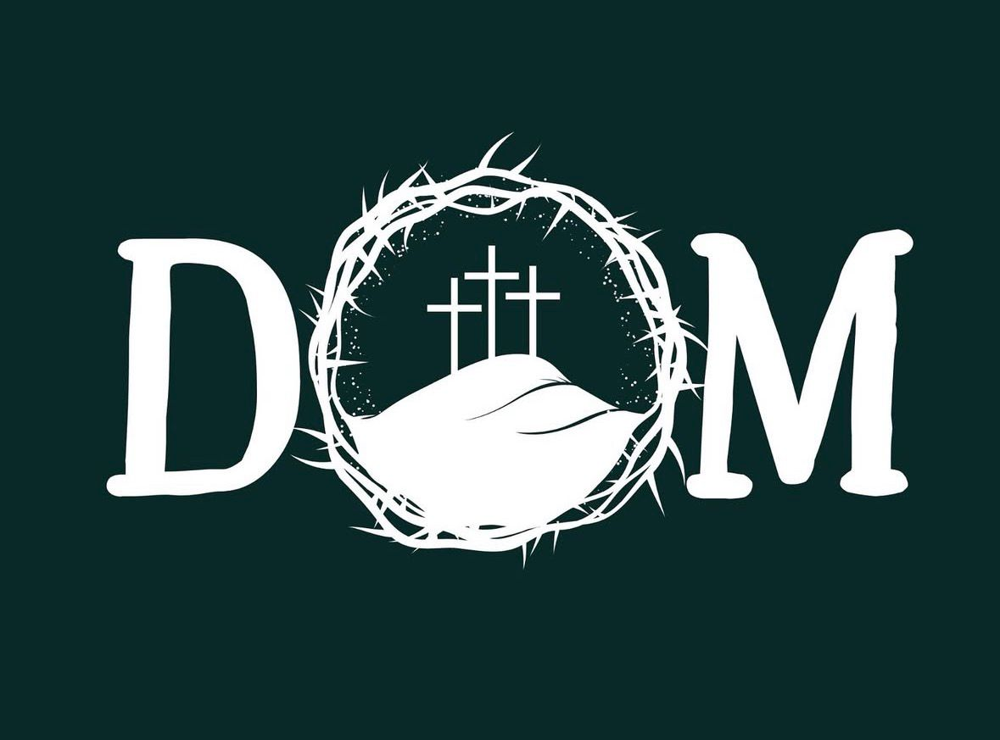

Grupo Yeshua
Sábado • 18h
Idade mínima: 13 anos
Fé e comunhão Entrar no grupo
Pastoral Juvenil
Horários organizados para você acompanhar a pastoral durante a semana.
Sábado • 18h
Idade mínima: 13 anos
Fé e comunhão Entrar no grupo
Domingo • 19:15
Idade mínima: 18 anos
Partilha e missão Entrar no grupoPara confirmar os encontros da semana, entre no grupo.